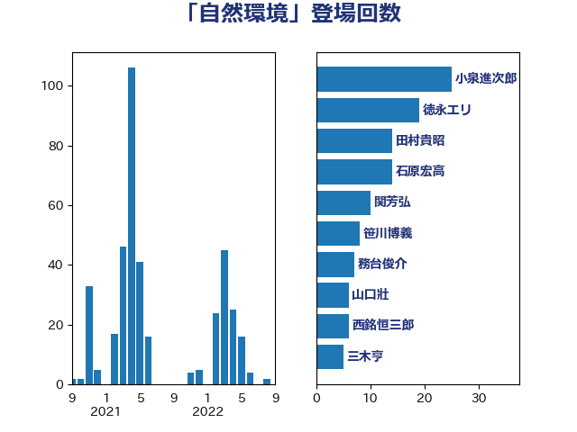

単語「自然環境」

| 小泉進次郎 | 自由民主党 | 25 回 |
| 徳永エリ | 立憲民主党 | 19 回 |
| 田村貴昭 | 日本共産党 | 14 回 |
| 石原宏高 | 自由民主党 | 14 回 |
| 関芳弘 | 自由民主党 | 10 回 |
| 笹川博義 | 自由民主党 | 8 回 |
| 務台俊介 | 自由民主党 | 7 回 |
| 山口壯 | 自由民主党 | 6 回 |
| 西銘恒三郎 | 自由民主党 | 6 回 |
| 三木亨 | 自由民主党 | 5 回 |
| 大岡敏孝 | 自由民主党 | 5 回 |
| 山下芳生 | 日本共産党 | 5 回 |
| 高橋千鶴子 | 日本共産党 | 5 回 |
| 小宮山泰子 | 立憲民主党 | 4 回 |
| 山口俊一 | 自由民主党 | 4 回 |
| 梶山弘志 | 自由民主党 | 4 回 |
| 源馬謙太郎 | 立憲民主党 | 4 回 |
| 赤羽一嘉 | 公明党 | 4 回 |
| 野上浩太郎 | 自由民主党 | 4 回 |
| 寺田静 | 無所属 | 3 回 |
| 山崎誠 | 立憲民主党 | 3 回 |
| 斉藤鉄夫 | 公明党 | 3 回 |
| 猪口邦子 | 自由民主党 | 3 回 |
| 田中健 | 国民民主党 | 3 回 |
| 高木毅 | 自由民主党 | 3 回 |
| 上月良祐 | 自由民主党 | 2 回 |
| 中川郁子 | 自由民主党 | 2 回 |
| 伊波洋一 | 無所属 | 2 回 |
| 佐藤啓 | 自由民主党 | 2 回 |
| 勝俣孝明 | 自由民主党 | 2 回 |
| 古川直季 | 自由民主党 | 2 回 |
| 坂本祐之輔 | 立憲民主党 | 2 回 |
| 山添拓 | 日本共産党 | 2 回 |
| 平山佐知子 | 無所属 | 2 回 |
| 新垣邦男 | 立憲民主党 | 2 回 |
| 朝日健太郎 | 自由民主党 | 2 回 |
| 末松信介 | 自由民主党 | 2 回 |
| 杉田水脈 | 自由民主党 | 2 回 |
| 枝野幸男 | 立憲民主党 | 2 回 |
| 清水貴之 | 日本維新の会 | 2 回 |
| 田名部匡代 | 立憲民主党 | 2 回 |
| 美延映夫 | 日本維新の会 | 2 回 |
| 萩生田光一 | 自由民主党 | 2 回 |
| 近藤和也 | 立憲民主党 | 2 回 |
| 近藤昭一 | 立憲民主党 | 2 回 |
| 高良鉄美 | 無所属 | 2 回 |
| 上田清司 | 国民民主党 | 1 回 |
| 下野六太 | 公明党 | 1 回 |
| 中島克仁 | 立憲民主党 | 1 回 |
| 中川宏昌 | 公明党 | 1 回 |
| 中野英幸 | 自由民主党 | 1 回 |
| 住吉寛紀 | 日本維新の会 | 1 回 |
| 勝部賢志 | 立憲民主党 | 1 回 |
| 國重徹 | 公明党 | 1 回 |
| 堀井学 | 自由民主党 | 1 回 |
| 大串博志 | 立憲民主党 | 1 回 |
| 大石あきこ | れいわ新選組 | 1 回 |
| 安達澄 | 無所属 | 1 回 |
| 宮崎政久 | 自由民主党 | 1 回 |
| 小池晃 | 日本共産党 | 1 回 |
| 岸信夫 | 自由民主党 | 1 回 |
| 岸田文雄 | 自由民主党 | 1 回 |
| 平口洋 | 自由民主党 | 1 回 |
| 有村治子 | 自由民主党 | 1 回 |
| 本村伸子 | 日本共産党 | 1 回 |
| 根本匠 | 自由民主党 | 1 回 |
| 梅谷守 | 立憲民主党 | 1 回 |
| 武田良太 | 自由民主党 | 1 回 |
| 河野太郎 | 自由民主党 | 1 回 |
| 渡辺猛之 | 自由民主党 | 1 回 |
| 滝沢求 | 自由民主党 | 1 回 |
| 石井苗子 | 日本維新の会 | 1 回 |
| 石川香織 | 立憲民主党 | 1 回 |
| 神津たけし | 立憲民主党 | 1 回 |
| 神谷裕 | 立憲民主党 | 1 回 |
| 福島みずほ | 社会民主党 | 1 回 |
| 福田達夫 | 自由民主党 | 1 回 |
| 秋野公造 | 公明党 | 1 回 |
| 空本誠喜 | 日本維新の会 | 1 回 |
| 紙智子 | 日本共産党 | 1 回 |
| 舟山康江 | 国民民主党 | 1 回 |
| 若松謙維 | 公明党 | 1 回 |
| 若林健太 | 自由民主党 | 1 回 |
| 茂木敏充 | 自由民主党 | 1 回 |
| 菅義偉 | 自由民主党 | 1 回 |
| 赤嶺政賢 | 日本共産党 | 1 回 |
| 金子恵美 | 立憲民主党 | 1 回 |
| 金田勝年 | 自由民主党 | 1 回 |
| 鈴木宗男 | 日本維新の会 | 1 回 |
| 鈴木英敬 | 自由民主党 | 1 回 |
| 長浜博行 | 無所属 | 1 回 |
| 阿部知子 | 立憲民主党 | 1 回 |
| 青木愛 | 立憲民主党 | 1 回 |
| 高木啓 | 自由民主党 | 1 回 |
| 高鳥修一 | 自由民主党 | 1 回 |
| 鷲尾英一郎 | 自由民主党 | 1 回 |